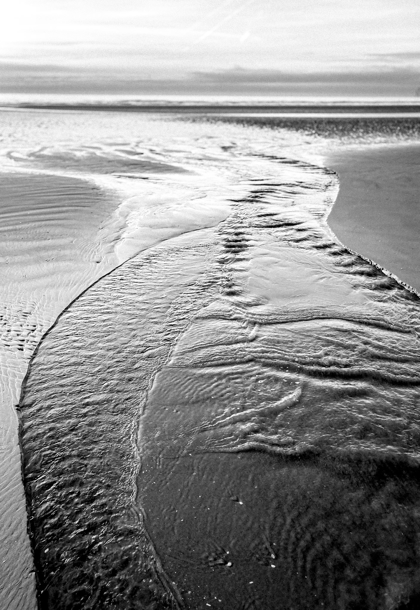

A Contemplative Cartography
The photographic works presented here are not landscapes or surrounding environments in the conventional sense. They are objects of contemplation, based on a practice of direct perception (Miksang) that establishes immediate, unconditioned connections with the world around us.
Every image seeks to hold the first moment of seeing, before the conceptual mind intervenes with memory or expectation. This approach aligns with Zen-inspired aesthetic principles:
| Yūgen | The pursuit of profound, subtle, and hidden depths of beauty, best expressed in the tonal gradation of black-and-white imagery. |
| Wabi-Sabi | A gentle acceptance of change and impermanence, finding beauty in imperfection, and acknowledging the effects of time, age, and experience. |
These photographs invite you to slow down, to gaze and relax the habitual mind. They are taken as echoes of stillness, resisting the need for explanation.

Felix Zajitschek
As a scientist with a PhD in Evolutionary Ecology, my work has always been concerned with structure, time, and the ceaseless dynamic flow of life and death. This scientific view found its mirror in the philosophy of Soto Zen and the direct perception methodology of Miksang (The Good Eye).
For decades, I have understood the landscapes around me as teachers and friends: from the Bavarian riverbeds shaped by the last ice age, the majestic European alps, and the foothills of the Pyrenees, to the forests of Scandinavia, and the primal light of Tasmania. Now settled amid the varied landscapes of Formby, with its dunes, the Irish Sea, and the pinewoods, the photograph is a glimpse of my unconditioned reality, rather than an account of place alone.
Prints in monochrome remove the distraction of colour and allow the eye to meet and focus on the fundamentals—light, form, silence, and interconnectedness.
Selected Context
- My background as a scientist involved living and working in France, Sweden, the USA, Australia, and the UK, shaping a unique, global perspective on natural structure and scale.
- My photographic practice integrates Soto Zen philosophy, catalyzed by the vast coastal environments of Tasmania and New South Wales, as well as the unique character of the Formby and Sefton coastline.
- My current output is focused on limited edition fine art prints, ensuring the unique nature and meticulous quality of each finished photograph.

Lilly Skye Zajitschek
Stillpoint Art Studio is evolving through a collaboration with my daughter, Lilly Skye. Her work explores the relationship between structure, movement, and the environment. Trained as a ballet dancer and athlete, she approaches the landscape not just as a visual space, but as a stage for physical discipline and dynamic presence, offering a counterpoint to the contemplative foundation of the studio.
Lilly Skye is a 15-year-old artist and GCSE Photography student. Born in France and holding German nationality, her unique perspective is shaped by living and studying in Sweden, the US, Australia, and the UK. Her photographs often capture the interplay of light and form found in coastal environments, mirroring the discipline and tension inherent in her primary pursuits of neo-classical ballet.